How to Link Tables Using SQL Parameters
Table of Contents
Creating the Database, Tables, and Data Source
Enabling Use of Named Parameters for the Data Source
Creating a Form for the Data Source
Linking the Subform to the Main Form
Introduction
This document attempts to show how to set up a master form and linked detail form for a MySQL database, via ODBC. You might want to display an author and all the books written by that author, or an actor and all the films that actor has appeared in, or a customer and all the orders placed by that customer.
Two database tables are linked together by means of an SQL query containing a named parameter (more later). The example you will construct uses customers in a customers table and orders for those customers in an orders table. Each order is linked to the customer who placed it by means of a cust_id value in the orders table that matches a customer_id value in the customers table.
It is useful to keep in mind the distinction between the underlying MySQL database tables, which contain the actual data and which are managed by the MySQL server, and the OOo graphical widgets that display the data from the tables. You will be using these widgets, such as Fields and Table Grids, to create a linked set of forms.
The goal will be to create a form with labeled fields to display the data for a single customer, and a subform containing a table grid that will show all the orders for that customer. When the two forms are linked together properly, you will be able to browse through the list of customers, one at a time, and have the table grid change each time to show orders for the current customer.
This example was constructed using a standalone, single-user installation of OOo 1.0.1 on Windows98. The process may generalize to multiuser installations and to other OSs, but it has not been tested.
MySQL is available from http://www.mysql.com/.
We will assume that you have installed MySQL, that you can create and populate MySQL databases, that you can set up an ODBC data source in OOo and make the data tables appear in OOo, and that you are able to add, delete, and modify records. Remember that OOo can only edit database tables that have a primary key or unique indexed column. Other tables are read-only.
If you need help creating a data source for this example, see
'How to Create a Data Source from Scratch' on the Users How-to page at
http://documentation.openoffice.org/HOW_TO/index.html
For help with ODBC, see 'OpenOffice.org 1.0, unixODBC, and mySQL' at http://openoffice.homelinux.org/index.php?s=38
There is a lot of information in that document; you may want to read it first.
The process should be similar for PostgreSQL, Oracle, Firebird (Interbase), MS SQL Server, and other RDBMS's that can use ODBC. Note that dBase tables can be linked together, but results have been uneven.
The process should also work if the connection is via JDBC. See How Can I connect to MySQL?
Creating the Database, Tables, and Data Source
Create the database. Here we are using MySQL v3.23.49 and myodbc v2.50.37.
create database customer_orders;
create table customers (
customer_id int unsigned not null primary key,
customer_name char(50) );
create table orders (
order_id int unsigned not null primary key,
cust_id int unsigned references customers.customer_id,
order_item char(50) );
Create an ODBC datasource.
See 'How to Create a Data Source from Scratch' mentioned above.
In this example, the datasource is called 'form_exper_mysql'.
(The following several pages are an exercise in creating and modifying table structures in OOo. If your tables are already the way you want them, you can skip ahead to
Or, once you have created an ODBC data source, you can create the tables directly in the OOo Data Source Explorer, the left-hand panel in the figure
(F4 or View > Data Sources).
To the right is the Beamer or data source viewer.
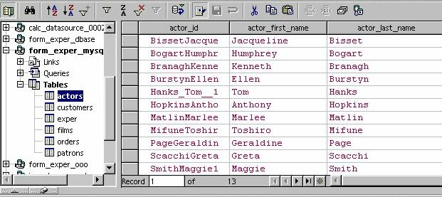
You can read more about the Data Source Explorer and the Beamer in the OOo Help files
Help > Contents > Index tab and type in the search words data sources. Look at the article data source; overview (or data sources explorer; overview ).
To create a new table, click on the word Tables under your data source in the Data Source Explorer, right-click, and choose New Table Design.
Or to modify the structure of an existing table, select the table name, right-click, and choose Edit Table.
You can read more about creating database tables in the OOo Help files
Help > Contents > Index tab and type in the search word table. Look at the article table designs; data sources
And see the How-to 'OpenOffice.org 1.0, unixODBC, and mySQL' mentioned above.
The OOo Table Design window seems to allow only certain kinds of changes to be made to the structure of a database table once it has been created. For example, you can add and delete fields (columns). In the figure, we have added two new fields (rating and genre) to an unrelated database table called films. (The films table is not part of our overall example. It is used here to avoid excessive changes to the customers and orders tables.)
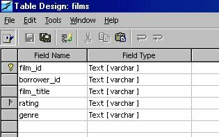
But you would not be able to use the Table Design window to modify the size of an existing column. The settings for existing columns appear to be grayed-out. This seems to be a missing feature in the ODBC driver and may be added in future releases.
You could accomplish a change in column size by going outside OOo and working directly in MySQL. However, there is a way to issue SQL commands directly from OOo. Open the Data Source Administration window by choosing Tools > Data Sources ...
Select your data source, select the Queries tab, and click on the New SQL Command button.
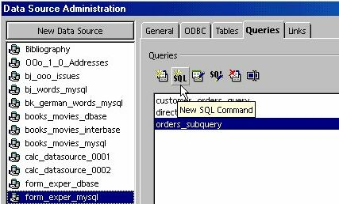
You will get a Query window (next figure) in which you can type an SQL command.
Let's experiment on the films table.
In the figure we have entered a command to change the size of the genre column in the films table from char(16) to char(22).
alter table films modify column genre char(22);
Press the Run SQL Command Directly button (fourth button from left) and then press the Run button (the leftmost button) to run the SQL command.
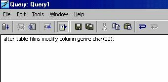
When done, type in another command
describe films;
and again press the Run button. You should now see a listing of the fields of the films table with the genre field having the new column size.
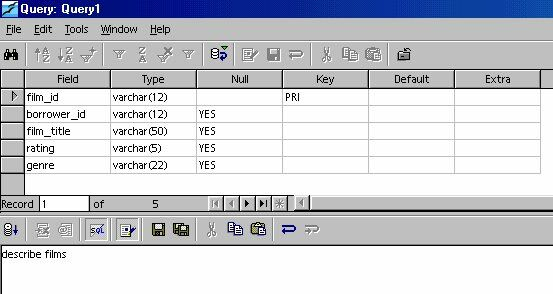
You can read more about direct SQL commands in the OOo Help files
Help > Contents > Index tab and type in the search word SQL. Look at the articles SQL: executing directly and SQL statements; executing.
Adding Data to Tables
Now back to our customers and orders tables. If everything worked, you should be able to see the two table names in the Datasource Explorer and two empty grids with labeled columns in the Beamer.
Enter some data in the two tables:
customers table:
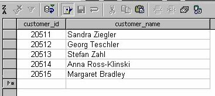
orders table:
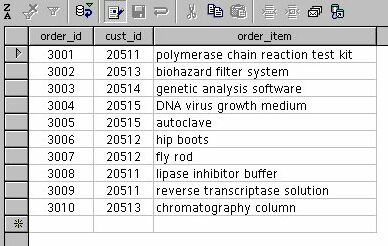
MySQL
does not yet enforce referential integrity of foreign keys, so be
sure that the cust_id values in the orders table match a customer_id
value in the customers table.
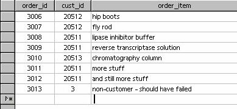
Just for illustration, we have added an order with order_id 3013 for a non-existent customer (cust_id = 3),. If referential integrity constraints were being enforced, insertion of this record would have been prohibited. The order is an orphan and would never show up in the linked detail table we are going to build, since it is not linked to any customer. Delete the extra order record.
Referential integrity constraints, which should be added in a future version of MySQL, would also prevent us from deleting a customer record from the customers table as long as the orders table contains at least one order for that customer.
And if we changed the value of a customer's customer_id in the customers table, referential integrity could also change the corresponding cust_id values in the orders table to match the new value.
Many other Relational Database Management Systems (RDBMSs) do support and enforce referential integrity constraints.
Enabling Use of Named Parameters for the Data Source
In order to display one customer and all of that customer's orders, OpenOffice.org uses named parameters to link together two database tables:
select * from orders where cust_id = :current_customer_id
As of OOo 1.0.1, there is no user interface (dialog box) for turning on the recognition of named parameters. Until a user interface becomes available, you will have to use a macro to turn on recognition of named parameters for each datasource that needs to use them. However, this problem is being addressed; so the macro may not be needed in the future.
The macro is part of the FAQ for the Database Access Project at http://dba.openoffice.org/FAQ/ (see question 3 in the FAQ).
The macro and an explanation can be found at
http://dba.openoffice.org/howto/param_subst.html It is included below, with permission.
The macro has three parts:
Sub Main,
Sub EnableParameterNameSubstitution and
Function AddInfo
From the OOo main menu, choose Tools > Macro.
In the center panel of the Macro dialog box,
under soffice > Standard, select Module1 and click Edit.
This will open the BASIC IDE, where you can type in macro code.
Copy all three parts of the macro code from the yellow section below and paste them into the IDE window.
In the Main subroutine, change the name in quotes from “Bibliography” to the name of your datasource.
Sub Main
EnableParameterNameSubstitution( "form_exper_mysql" )
End Sub
This is the only editing you need to do to the macro, at least for this datasource.
The Macro
REM ***** BASIC *****
Option Explicit
' Enter the name of the data source here:
Sub Main
EnableParameterNameSubstitution( "Bibliography" )
End Sub
Sub EnableParameterNameSubstitution( sDataSourceName as String )
' the data source context (ehm - the service name is historical :)
Dim aContext as Object
aContext = createUnoService( "com.sun.star.sdb.DatabaseContext" )
' the data source
Dim aDataSource as Object
aDataSource = aContext.getByName( sDataSourceName )
' append the new ParameterNameSubstitution flag
Dim bFlag as Boolean
bFlag = TRUE
Dim aInfo as Variant
aInfo = aDataSource.Info
aInfo = AddInfo( aInfo, "ParameterNameSubstitution", bFlag )
' and write back
aDataSource.Info = aInfo
' flush (not really necessary, but to be on the safe side :)
aDataSource.flush
End Sub
' more below
Function AddInfo( aOldInfo() as new com.sun.star.beans.PropertyValue,
sSettingsName as String, aSettingsValue as Variant ) as Variant
Dim nLower as Integer
Dim nUpper as Integer
nLower = LBound( aOldInfo() )
nUpper = UBound( aOldInfo )
' look if the setting is already present
Dim bNeedAdd as Boolean
bNeedAdd = TRUE
Dim i As Integer
For i = nLower To nUpper
If ( aOldInfo( i ).Name = sSettingsName ) Then
aOldInfo( i ).Value = aSettingsValue
bNeedAdd = FALSE
End If
Next i
' allocate the new array
Dim nNewSize as Integer
nNewSize = ( nUpper - nLower + 1 )
If bNeedAdd Then nNewSize = nNewSize + 1
Dim aNewInfo( nNewSize ) as new com.sun.star.beans.PropertyValue
' copy the elements (a simply copy does not work in Basic)
For i = nLower To nUpper
aNewInfo( i ) = aOldInfo( i )
Next i
' append the new setting, if necessary
if ( bNeedAdd ) Then
aNewInfo( nUpper + 1 ).Name = sSettingsName
aNewInfo( nUpper + 1 ).Value = aSettingsValue
End If
AddInfo = aNewInfo()
End Function
' end of macro
Click on the Run icon to run the macro.
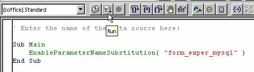
Close the BASIC IDE.
To repeat, the need for this macro is expected to disappear in the near future.
Creating a Form for the Data Source
In the OOo menu, choose File > AutoPilot > Form
In the first dialog box, select your Data Source and then select the table for the main form (here it is the customers table).
Click the =>> button to include all the fields (columns) in the form.
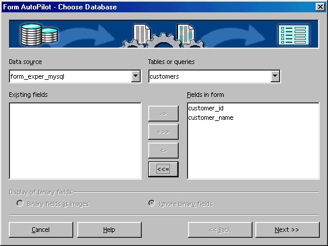
Click the Next >> button.
In the second dialog box, click one of the five 'Arrangement of DB fields' buttons.
Select a page background style from the list at right.
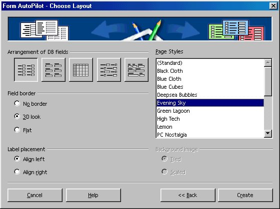
Click the Create button.
Select an appropriate directory for the form; accept the suggested name or make up a different name. Save the form.
You now have the first half of the form done.
Click on the Form Navigator button (fifth from the left in the toolbar above the form).
The Form Navigator window shows that you have one form, called Standard, containing two Labels and two TextFields.
The area in the figure with green handles is the Standard form. The rest of the page is just a writer text document (.sxw).
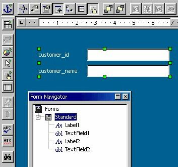
Adding a Subform
In the Form Navigator, select the Standard form, then right-click, and from the context menu choose New > Form as shown:
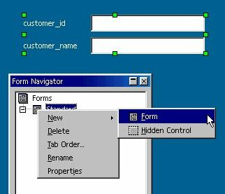
You now have a main or master form and a subform. We will link the subform to the main form in a few minutes, by means of an SQL query with a named parameter.
You can read more about subforms in the OOo Help files
Help > Contents > Index tab and type in the search word subform. Look at the articles subforms; forms and subform; creating one with Form Navigator
Now you need to place a table grid control on the page to represent the subform.
Check to be sure that the Standard subform is selected in the Form Navigator, so that the table grid will belong to the subform rather than to the main form.
Click-and-hold (long-click) on the Form button in the toolbar at the left (a hand with a finger pointing).
(Incidentally, long-clicking on buttons with green triangles, such as New, Paste, Undo, Insert Fields, and Insert Objects, in the toolbars provides valuable extra functionality.)
Click on the Table Control button.
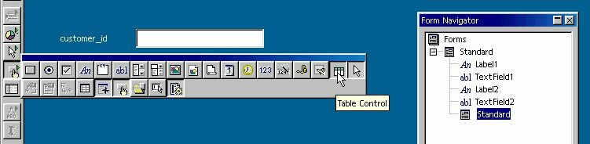
In the form, drag out a rectangular outline for the orders table grid.
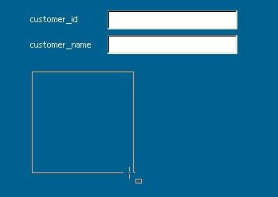
When you release the mouse button, a dialog box will appear.
In this first dialog box, select your data source from the Data source list
and select orders from the Table list.
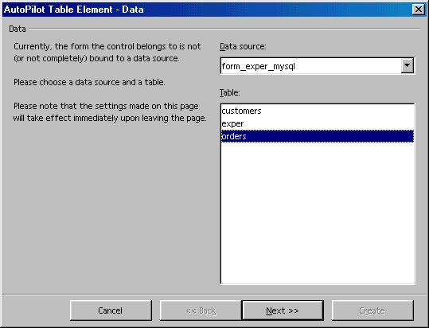
Click the Next >> button.
In the second dialog box, click the =>> button to add all the fields of the orders table to the grid. Normally you would not need to display the cust_id field in this grid, but it is included here for purposes of illustration.
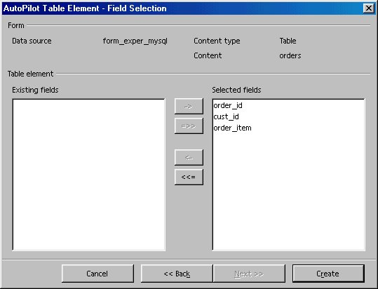
Click the Create button.
You can drag the right edge of the 'order_item' column header to make a wider column.
The resulting form and subform, still in edit mode:
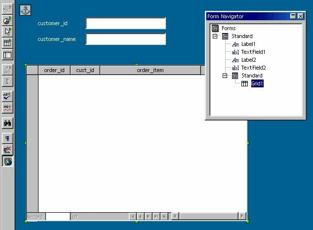
'Edit mode' might better be called 'form-design mode', to distinguish it from 'form alive' or 'form running' mode, where you can edit the data in the underlying tables.
In 'form-design mode', no data are visible, but you can work on the structure and properties of the form.
Linking the Subform to the Main Form
In the Form Navigator, select the main form (the upper Standard). Right-click and choose Properties. The form's Data tab properties should resemble the figure:
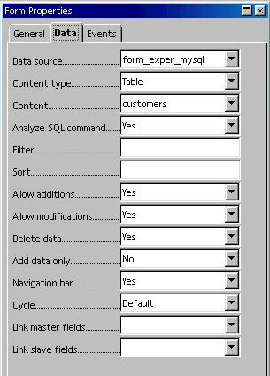
Close the Form Properties dialog.
In the Form Navigator, select the subform (the lower Standard). Right-click and choose Properties. Set the form's Data tab properties as in the figure and in the following description:
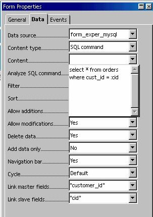
Make sure the Data Source is set to the name of your Data Source.
Set Content type to 'SQL command'.
Click the down-arrow of the Content property and type in an SQL query with a named parameter:
select * from orders where cust_id = :cid
The named parameter 'cid' can be any meaningful variable name, preceded by a ':' .
Set Link master fields to the name of the primary key in the customers table:
customer_id
The program will add the quotes.
Set the Link slave fields to the name of the variable used in the SQL query, minus the colon ( : ):
cid
The program will add the quotes.
Close the Form Properties dialog.
The variable cid will now stand for the value of the primary key in the current record of the customers table. The SQL query will return those records from the orders table whose cust_id field matches the current value of cid. When you move to the next customer record, cid will take on a new value.
Set any other properties for the various Labels, TextFields, and Grid, such as font size, color, background color, etc.
When done, exit Edit mode by clicking the Form Button
Your form should now show the first customer and all of that customer's orders.
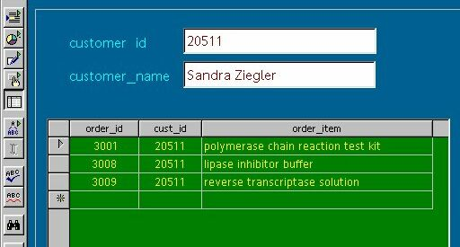
To move through the other customers in the database, click the navigator buttons at the bottom of the form:
If, instead of the expected result, you get a cryptic error message like the following, it may be that recognition of named parameters was not done correctly. Go back and try running the macro again.
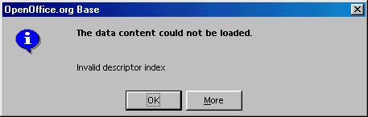
You should be able to add new order records for the current customer, modify an existing order, or delete an order.
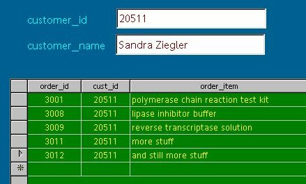
Here
we have added two additional orders for customer 20511 by just typing
them in. In fact, since we are looking at only this customer at the
moment, the cust_id value of 20511 is filled in automatically when we
click in the Insert New Record row, marked by an '*'.
Formatting Data Fields
If your integer fields do not appear as integers, for example if they display as 3001.00,
it may be because OOo creates Text Box Fields when it should create Numeric Fields for integers.
Click on the Form button to put the form into edit mode. Click on the column-header for the order_id field. Then right-click and choose Column...
You should see a column properties dialog box like this:
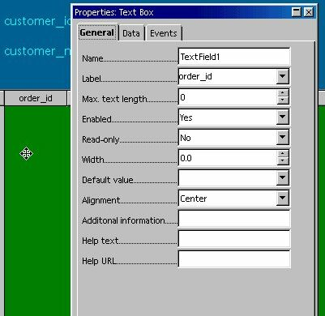
Note that there is no property for the number of decimal places. We really should have a different kind of field here.
(Parenthetically, also note the Max. text length property. When it is set to 0, max text length, the maximum number of characters that will be displayed, is taken from the size of the underlying database field, as is desirable.)
If you right-click again on the order_id column header, you will see that you can insert additional columns next to the order_id column, or you can replace the Text Box Field with a different kind of field. Either a Numeric Field or a Formatted Field would be a better choice for displaying integer data.
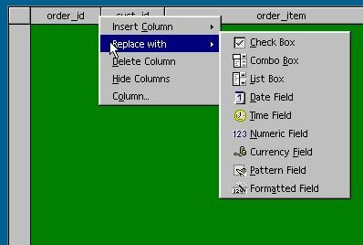
You can also move a column to a new location by using Alt-drag.
Just as an experiment, try inserting two extra columns. As in the following two figures, we will insert a Numeric Field and a Formatted Field.
Click on the order_id column header, right-click, and choose Insert Column.
Insert a Numeric Field, which may be labeled “Col1”. Click on it to select it, then right-click and choose Column... On the Data tab of the Properties dialog, attach the field to the underlying order_id field of the orders table by typing in “order_id”.
On the General tab, set the Label property to “order_id2”. Set the Decimal accuracy to 0 (no decimal places). And since we are using unsigned integers, set Value min to 0 as well. You could also set Alignment to “Center”.
Close the dialog box.
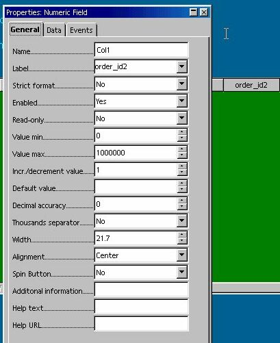
Insert
a Formatted
Field, click on it to select it,
right-click and choose Column...
On the Data tab of the Properties dialog box, attach the field to the order_id field by typing in “order_id”. On the General tab, set the Label property to “order_id3”. Click the Formatting button and choose the integer value from the list (no decimal places). You could also set Alignment to “Center”. Close the dialog box.
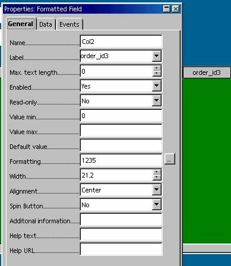
Click the Form button to exit Edit mode. You should now see three different types of fields all displaying the same order_id data.
When you have seen the results of the experiment, you can delete the two fields you just added.
You might want to replace the Text Box Fields for the order_id and cust_id fields with Numeric Fields, if your integer values are not displaying correctly.
More Examples
The example also works if the keys are alphanumeric instead of integers:
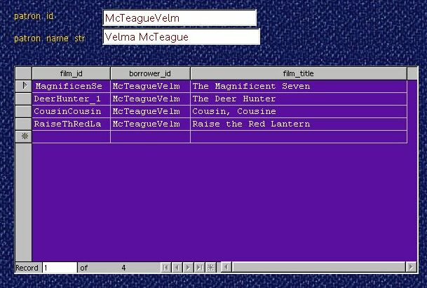
Here are two dBase tables linked in the same way:
select * from car_color where c_car_id = :cid
and :cid refers to the primary key car_id in a cars table.
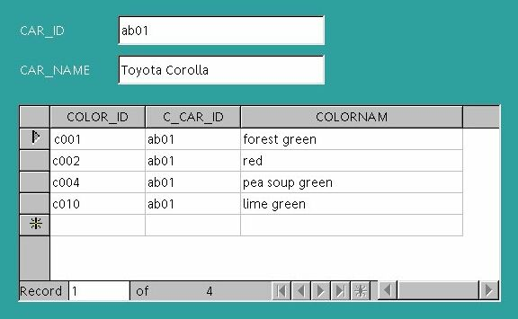
Note that the Add New Record * is enabled; it is possible to edit the data in the subform. The c010 record was added by typing it into the subform.
However, linking other dBase tables has been less successful. dBase tables produced in OOo have not worked as well as tables created in another database program and then exported. The main difference seems to be the ability to create a primary key.
Here is a slightly more complex example with MySQL tables. We want to display the actors that appeared in a particular film. We have three tables: films, actors, and acted_in. The acted_in table holds pairs of film_id / actor_id values plus a sequence number called billing and a character name for each part in the film. Most of the keys are alphanumeric.
create table films (
film_id char(12) not null primary key,
film_title char(50),
rating char(5),
genre char(22) );
create table actors (
actor_id char(12) not null primary key ,
actor_first_name char(16),
actor_last_name char(20) );
create table acted_in (
acted_in_id int unsigned not null primary key,
film_id char(12) not null references films.film_id,
actor_id char(12) not null references actors.actor_id,
billing smallint unsigned,
character_name char(60) );
In the subform, the SQL statement that links the tables together is:
select
acted_in.film_id,
acted_in.actor_id,
acted_in.billing,
actors.actor_first_name,
actors.actor_last_name,
acted_in.character_name
from
acted_in,
actors
where
acted_in.film_id = :fid and
acted_in.actor_id = actors.actor_id;
And the named parameter :fid is linked to the current value of film_id in the films table.
As these tables get larger, you would need to index certain columns to speed up queries.
For simplicity, we have omitted a directors table, a screenwriters table, and perhaps a separate table to hold still photos and video clips. And many actors.
The result of linking three tables is shown here:
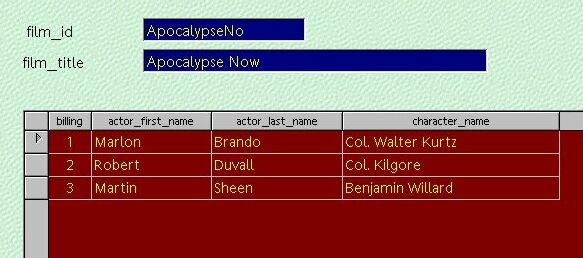
These examples were built on a writer document, using the AutoPilot. The same thing can be constructed on a spreadsheet, but you will have to put the pieces in place by hand.
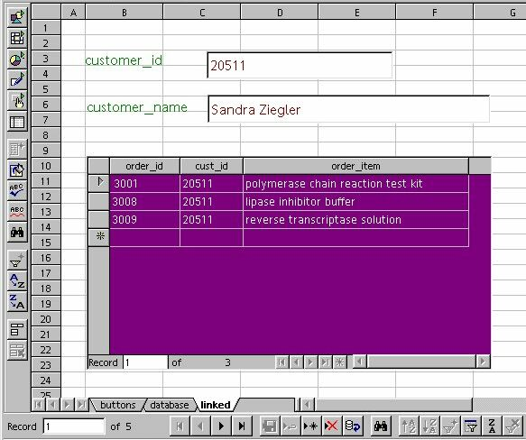
Summary
You have created a form to display individual records of a master table (the customers table) and a subform to display the linked order records for the current customer from a detail table (the orders table). You have used an SQL query containing a named parameter to link the subform to the main form. You have set the “Link master fields” property of the subform to the name of the primary key field in the customers table and the “Link slave fields” property to the named parameter. You can now browse through the customers and see the orders for each customer. For any one customer, you can add, modify, and delete orders. You can generalize this process to other sets of data tables.
You also understand a bit more about working with OOo graphical widgets, including setting their various properties.
This example has been a fairly basic one. Anything more complicated will have to wait for another How-to.
Suggestions and corrections are welcome.
Credits
Author: Daniel Strome
Thanks : To the contributors to the users@openoffice.apache.org and dev@dba.openoffice.org mailing lists
Intgr by : N/A
Last modifications : 15 October 2002
Contacts: OpenOffice.org Documentation http://documentation.openoffice.org
Translation : N/A
License
This document is published under the terms and conditions of the Public Documentation License
© 2002 Daniel Strome
Appendix
Public Documentation License Notice
The contents of this Documentation are subject to the Public Documentation License Version 1.0 (the "License"); you may only use this Documentation if you comply with the terms of this License. A copy of the License is available at http://www.openoffice.org/licenses/PDL.html
The Original Documentation is "How to Link Tables Using SQL Named Parameters".
The Initial Writer of the Original Documentation is Daniel Strome, Copyright © 2002. All Rights Reserved.
(Initial Writer contact(s): mailto:danstrome@openoffice.org ).
Contributor(s): ______________________________________.
Portions created by ______ are Copyright (C)_________[Insert year(s)]. All Rights Reserved. (Contributor contact(s):________________[Insert hyperlink/alias]).
NOTE: The text of this Appendix may differ slightly from the text of the notices in the files of the Original Documentation. You should use the text of this Appendix rather than the text found in the Original Documentation for Your Modifications.